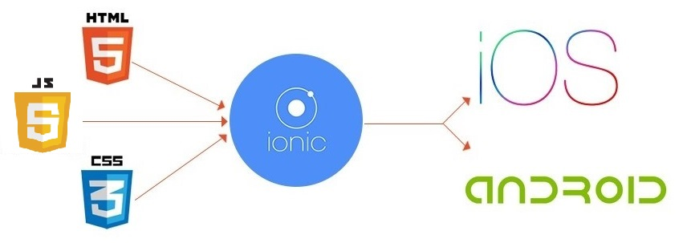

IONIC FRAMEWORK
Nombre: Boris Nilo Moreno
Profesora: Amparo Galdames
Contextualización
- Problema: Desarrollar aplicaciones multiplataformas
- Solución: Aplicaciones Híbridas con Ionic Framework
-
Información Previa
- Framework
- Api
- Plugin
-
¿Qué es Ionic?

-
¿Cómo funciona?
-
Pro y contras de Ionic